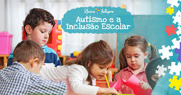
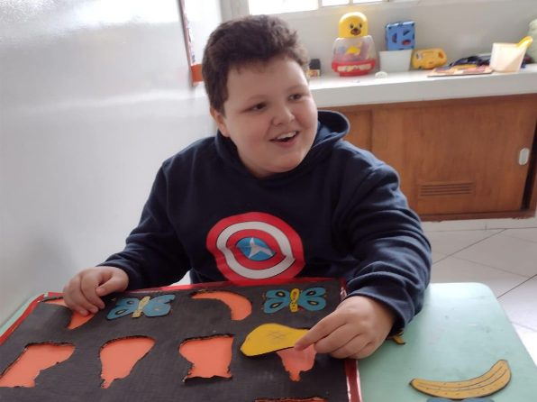

No mês de conscientização sobre o autismo, reforçamos a importância da inclusão e do suporte adequado para pessoas dentro do espectro autista. A sociedade tem evoluído em compreensão e aceitação, mas ainda há desafios a serem superados.
O Transtorno do Espectro Autista (TEA) é uma condição neurológica que afeta a comunicação, a interação social e o comportamento. Os sintomas variam em intensidade e manifestação, tornando cada indivíduo único em suas necessidades e habilidades.
Muitos autistas enfrentam barreiras no acesso à educação, ao mercado de trabalho e às relações sociais. O apoio adequado, como adaptações educacionais e inclusão no ambiente profissional, é fundamental para promover a autonomia e qualidade de vida.
Campanhas de conscientização são essenciais para reduzir o preconceito e estimular a empatia. Escolas, empresas e famílias podem contribuir promovendo informação e criando espaços acessíveis e inclusivos.
As imagens a seguir retratam momentos de inclusão e aprendizado no dia a dia de pessoas autistas. Elas ilustram a importância do acolhimento e das oportunidades oferecidas para o desenvolvimento e bem-estar.
Uma criança autista participando de atividades em grupo, demonstrando como a interação social pode ser estimulada em ambientes inclusivos.
Momento de aprendizado em sala de aula, onde adaptações pedagógicas ajudam a facilitar a compreensão e o desenvolvimento das crianças autistas.
Palestra educativa sobre o autismo, promovendo a conscientização e incentivando uma sociedade mais empática e acessível.